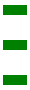
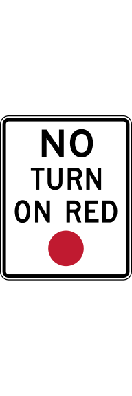

My Project
OK
Traffic Control
Line Markings
Pavements
Project Settings


0°
Flip 180° (F)
Remove Selected Marker (R)
Lane Color:
White
Yellow
Lane Width:
6"
2'
Lane Style:
Solid
Long Dashed
Short Dashed
Draw New Lane Line (L)
Remove Selected Lane Line (R)
New Offset Line
Stroke Color:
Pavement Color:
Pavement Opacity:
1
New Pavement Shape
Edit Selected Pavement Polygon
Remove Selected Pavement Polygon
Load Latitude:
Load Longitude:
Load Zoom:
Update View Coordinates
Delete All Markers
Delete All Lane Lines
Clear Map
📂 Load Design .geojson file
💾 Save Design .geojson file